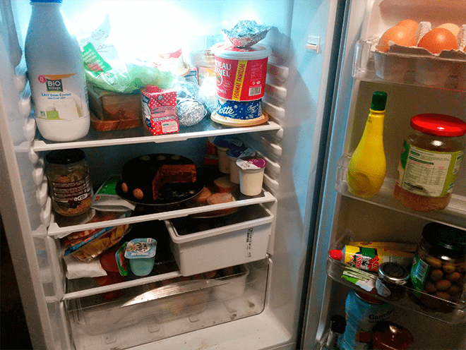
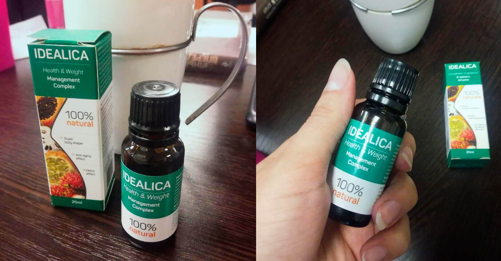
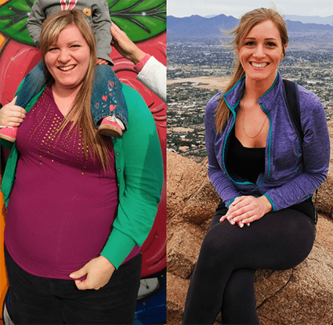

Povestea vieții
Armonia naturii cu Simona Anderson
De obicei în blogul meu eu vă povestesc despre noile îndreptări şi formatele ecoturismului. Dar astăzi o sa vă povestesc despre fapta care mi-a schimbat radical viaţa şi despre produsul care m-a ajutat să slăbesc cu 80 kg.Astăzi se împlineşte o lună din momentul în care am slăbit de 2 ori.
Da,aţi auzit bine. În mai puţin de un an am slăbit de la 169 kg la 82 kg. Acum cântăresc 77 kg,a mai rămas încă puţin până la greutatea mea optimă,conform indicelui de greutate. Când am postat pe instragram pozele "înainte" şi "după" ce am slăbit,unii oameni spuneau că sunt fake.
Atunci m-au atins foarte tare vorbele şi neîncrederea oamenilor. Toată perioada în care am slăbit postam fotografii,care arătau progresul meu,indicam greutatea care era la moment şi împărtăşeam senzaţiile. A fost o ruşine să văd o astfel de reacţie a oamenilor,şi am decis să postez fotografiile care au clarificat tot.
În sfârşit m-au crezut şi au început să mă întrebe cum am atins un astfel de rezultat. Povestesc.
Un an în urmă am început să mă ocup activ în sala de fitness. Paralel încercam diferite diete.Greutatea a început să scadă,dar mie tot timpul îmi era foame,şi când mă aşezam la masă îmi era greu să mă limitez. Şi da,uneori îmi era greu să mă abţin şi mă întorceam la mâncarea nesănătoasă.
Iată ce se întâmpla în frigiderul meu.
Am început să caut soluţia pentru diminuarea poftei de mâncare. Antrenorul de fitness mi-a recomandat cafeaua verde. Am băut jumătate de an. La început o fierbeam în cratiţă,după asta o cumpăram în pliculeţe. Rezultatul a fost oribil,am avut senzaţia că beau o soluţie din pământ şi apă. Dar într-adevăr avea efect-eu slăbeam într-o lună cu 4-5 kg.
Într-un moment dat am văzut reclama produsului pentru slăbire , care are în componenţa sa: cafea verde,ceai de Tibet,şi extracte de fructe exotice. Acolo era indicat că preparatul reduce pofta de mâncare,accelerază metabolismul şi elimină grăsimile din organism.
Am decis să încerc. Administram preparatul conform instrucţiei, 2 ori pe zi dizolvam câte 25 de picături într-un pahar cu apă. Deja după prima săptămână de administrare am simţit schimbări în organism. Înainte după antrenament mâncam o farfurie plină,dar acum abia mă isprăvesc cu o porţie de salată. Am încetat să mai am poftă de ceva gras,acum mâncarea de bază sunt fructele.
Cifrele de pe cântar îmi bucurau ochii. În prima săptămână de administrare a produsului am slăbit cu 15 kg,a doua cu 12,iar a treia cu 10 kg. În afară de asta mai simţeam şi un plus de energie.
Acum înţeleg cât de mult slăbirea mi-a schimbat viaţa. Sunt un specialist în domeniul turismului,15 ani am lucrat într-o agenţie de turism,dar când am luat kilograme în plus am fost concediată de la lucru. Şeful meu a spus că de la o asemenea "Grăsană" nimeni nu va cumpăra nici un tur. Am început sa lucrez într-un fast-food (acolo am început să mănânc şi mai mult). Nu reuşeam să găsesc un lucru după specialitate.
Însă când am slăbit,am fost invitată într-o companie internaţională care se ocupă de turismul corporativ. Acum totul e bine şi pe viitor doresc să dezvolt proiectul meu personal.
O sa mă bucur mult dacă istoria mea o să vă fie de folos. Dacă sunteţi interesaţi de produs,puteţi să îl găsiţi aici. Cursul a fost livrat în 3 zile.
Comentarii:
Maria
ce voinţă are doamna asta,de a-ş putea şi eu aşa)) apropo,ce vârstă are?
Crina
are 42,am văzut pe instagram
Renata
uimitor! nu mi-am putut îchipui că este posibil să slăbeşti dupa 30 de ani,mai ales la 42!!! exemplul ei arată că principalul este voinţa!
Eudochia
Când am început să slăbesc,pentru motivaţie am început să postez fotografiile pe instagram şi să citesc comentariile oamenilor. Eu o înţeleg foarte bine pe Simona,nu este deloc plăcut când depui efort dar cineva te învinuieşte şi spune că eşti fake.
Evelina
Are dreptate,este nevoie să amesteci diferite componente naturale. Înainte am baut şi eu ceai de Tibet dar slăbeam doar cu 1-2 kg lunar. Acum mi-am comandat şi eu produsul de la producător şi apropo,am beneficiat şi de o reducere.
Raluca
Eu la fel am lucrat 5 ani într-un fast-food şi ştiu cât e de greu sa te abţii de la mâncare. Acum am început să slăbesc şi sunt în căutarea unui produs care m-ar ajuta să nu mă gândesc la mâncare.
Adelina
Deja de mai mult de o lună beau "",am slabit până când cu 18 kg). Am comandat pe site-ul oficial, la fel am beneficiat de o reducere) Rezultatul Simonei desigur m-a uimit!! Şi îmi dă şi mie puteri.
Andreea
Spuneţi-mi va rog,pot administra dupa naştere? copilul are acum 5 luni
Ana
Cred că se poate, pe mine într-adevar m-a ajutat ,am slabit cu 23 kg în 2 luni şi am ajuns pâna la greutatea mea optima. acum nu mai am ca înainte pofta de mâncare si mai ales de dulciuri. Înainte intram cu prietenele să bem o cafea si trebuia neaparat sa îmi iau şi o prăjitură,dar acum mai bine beau un fresh si totul e OK) Am comandat aici )
Mihaela
Iată ce înseamnă voinţă+o strategie corectă pentru slăbit! a mers şi la fitness şi a cautat informaţii pentru produse de slabire şi în final a gasit acest preparat!! Eu consider ca este un exemplu pentru noi toţi.
Iana-Patricia
Pentru mine este unica şansă pentru a slăbi. Pentru antrenamente obositoare nu am puteri după lucru,dar şi timp am puţin,am 3 copii şi cred ca ma înţelegeţi,o sa citesc despre ,istoria Simonei m-a motivat.
Laura
Simona spune-ne de câte ori pe zi mancai?
Teo
Corect a procedat Simona de la cafeaua verde într-adevăr nu este eficientă,eu o beau deja de 4 luni şi am slăbit cu doar 7 kg. o sa iau un curs de probă a acestui produs şi o sa vad dacă într-adevar este rezultat.
Ioana
Ştiu din propria experienţă cât este de greu sa te angajezi în câmpul muncii când ai kilograme în plus. Dacă lucrul este legat de comunicarea cu oamenii,atunci sigur nu o sa va puteţi angaja.
Monica
Respect şi mulţumesc din suflet Simonei pentru sfat!
Carolina
Câte cutii de trebuie sa cumpăr pentru 3 luni de administrare?